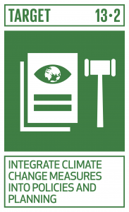
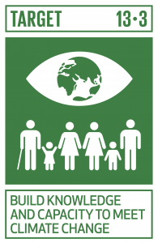
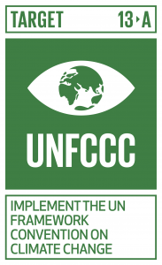
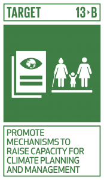

By 2030, Strengthen resilience and adaptive capacity to climate-related hazards and natural disasters in all countries

By 2030, Integrate climate change measures into national policies, strategies and planning

By 2030, Improve education, awareness-raising and human and institutional capacity on climate change mitigation, adaptation, impact reduction and early warning

By 2030, Implement the commitment undertaken by developed-country parties to the United Nations Framework Convention on Climate Change to a goal of mobilizing jointly $100 billion annually by 2020 from all sources to address the needs of developing countries in the context of meaningful mitigation actions and transparency on implementation and fully operationalize the Green Climate Fund through its capitalization as soon as possible

By 2030, Promote mechanisms for raising capacity for effective climate change-related planning and management in least developed countries and small island developing States, including focusing on women, youth and local and marginalized communities. Acknowledging that the United Nations Framework Convention on Climate Change is the primary international, intergovernmental forum for negotiating the global response to climate change.
Air pollution is a term used in a wide variety of ways, this is why it’s important to narrow down the definition of air pollution. Air pollution is when harmful substances (pollutants) end up in the atmosphere. This negatively impacts the health of humans, animals and plants. Some of these pollutants are caused naturally by volcanic eruptions, allergens and wildfires. But most pollutants are created as a result of human activities like car and truck exhausts, factories and energy used in agriculture. There are various types of air pollution, the first type which we can examine is greenhouse gases. Greenhouse gasses consist of Carbon Dioxide, Nitrous Oxide and Fluorinated Gases. These pollutants all trap the sun’s heat in the atmosphere which leads to a significant rise in global temperatures (global warming). Another form of air pollution is smog which reduces visibility and comes with significant health effects. There are two types of smog; sulphurous smog is smog caused by sulphur oxides released from burning fossil fuels. While photochemical smog also called ground-level ozone is created when sunlight reacts with nitrogen oxides and volatile organic compounds (chemicals with high vapour pressure). These nitrogen oxides come from car exhausts, coal power plants and emissions from factories. Volatile organic compounds are created from paints, gasoline and other cleaning solvents like acetone. Smog not only reduces visibility but poses serious risks to our health by causing respiratory illnesses and irritating the eye. The next type of air pollution we will discuss is toxic air pollutants. Toxic air pollutants are chemicals like lead, mercury, dioxin and benzene. These chemicals are released during coal and gas combustions which occur when waste is incinerated or gasoline is burned. This type of air pollution is the most detrimental to human health since it can cause cancer, reproductive problems and various birth defects. Overall, we see that air pollution comes in various forms and is mostly caused by human activities.
Air Pollution & SDG 13
Why is this related to SDG #13 (Climate Action)?
Climate action/change and air pollution are closely related to one another, in fact, climate change is partially caused by air pollution. More specifically, greenhouse gases (which are a form of air pollution) are causing climate change. As mentioned before, gases like carbon dioxide and nitrous oxide trap the sun’s heat in the atmosphere. You see, solar radiation which warms up the earth is normally re-radiated back into space. However, when high amounts of greenhouse gases are in the atmosphere, a much smaller portion of this heat is re-radiated into space. Instead, that heat is trapped in the atmosphere, thus increasing the temperature and causing global warming. These gases are able to trap heat because they absorb energy from infrared (IR) radiation. After the heat has been absorbed, the gases’ molecules start vibrating. After some time, they give off that energy by emitting a photon (the energy/heat goes back to the earth and increases the temperature). In essence, taking climate action is the same as acting on air pollution since we must solve air pollution before solving climate change. Another way which the two are related is that global warming actually worsens air pollution. This is because warmer weather (a result of climate change) raises the pollutants from low altitudes to higher altitudes. This occurs when warm air on the surface of the earth rises and cooler, heavier air sinks towards the surface. With the rising warm air, pollutants are carried to the atmosphere causing unhealthy levels of ground-level ozone (a form of smog). This means that there is a cycle with air pollution causing global warming and global warming worsening air pollution. These are the two reasons that air pollution and climate change are closely correlated.
Why is combating Air Pollution important?
The first and most important reason for combating air pollution is its health implications. Air pollution is currently the biggest environmental risk for early death according to the Environmental Defense Fund (EDF). It is responsible for over 6 million premature deaths from heart attacks, strokes, diabetes and respiratory diseases. That number is more than the number of deaths from AIDS, tuberculosis and malaria combined. There have been research studies that say long-term exposure to air pollution can also increase your likelihood of developing emphysema (lung condition) more than smoking a whole pack of cigarettes per day. This danger is caused by particle matters (PM) which are small airborne particles such as drops of liquid, dust or toxic pollutants. Coarse PMs like PM10 (less than 10 microns in diameter) are not as dangerous. These particles cause nasal and upper respiratory health problems which aren’t too serious. However fine PMs like PM2.5 (less than 2.5 microns in health) can pose serious and fatal health effects. According to the EDF, these health effects are “heart attacks, strokes, asthma, and bronchitis, as well as premature death from heart ailments, lung disease and cancer.” Fine PMs are more dangerous since they have the ability to penetrate deeper into your lungs. When we look at this information it is very clear that more action needs to be taken immediately. Other than consequences for our health, air pollution can affect ecological sources and animals. Water quality, soils and plants are all negatively affected by air pollution. For instance, Ozone causes severe injury and reduces the growth of a wide variety of plant species. Acidification, eutrophication, and changes in soil and water are linked to high levels of sulphur and nitrogen compounds in the atmosphere. For animals, metals like mercury bioaccumulate in the food chain, causing behavioural and reproductive effects in wildlife like fish and birds. Overall, we see that it is certainly crucial for us to take urgent action to reduce air pollution, not just for us but for animals and plants as well.
Solutions to Air Pollution
There are many ways in which both the general public and governments can help solve this issue. Let’s start with what governments can accomplish. A lot of air pollution is caused by the burning of fossil fuels for various forms of energy. Because of this, it is best for governments to invest in more eco-friendly sources of energy like wind turbines or solar panels. Not only will this help significantly with air pollution but it will also accomplish the goal of “taking urgent action to combat climate change.” Governments should also invest more in waste management for both industrial and household waste. Currently, lots of countries (especially those which are low-income) incinerate a majority of their waste. This causes the most dangerous type of air pollution because toxic pollutants are released when various plastics are burned. Governments should invest in more eco-friendly waste management and ensure that what can be recycled/composted is being recycled/composted. Unfortunately, Canada only recycles 9% of its recyclable plastics end up being recycled. Thirdly, governments should create more paths for bicycles, buses and sidewalks. By investing in these forms of infrastructure and services, the government reduces the need for residents to drive cars. Today, most places don’t have sufficient bike lanes or enough bus and subway lines for residents to feel compelled to use these more eco-friendly modes of transportation. It is crucial for governments to do this since greenhouse gasses like carbon dioxide are emitted from car exhausts. Lastly, governments should provide tax incentives for businesses to emit less pollution. This way businesses will be more compelled to limit their emissions. Even though governments play an important role in solving air pollution, the general public can also make impactful and meaningful steps to help the situation. The first thing we can do is use public transportation more often, this is much more eco-friendly since fewer cars are on the street emitting greenhouse gases. It’s also beneficial for us to bike or walk as these modes of transportation don’t emit any pollution. If a car is absolutely necessary, try to carpool with someone to lessen its negative impacts. We can also limit or reduce our use of wood-burning stoves and fireplaces. This is because wood smoke contains nitrogen oxides and benzene which can scar your lung tissue and might be carcinogenic. It’s also recommended for you to turn off your lights when they’re not in use, this reduces the amount of energy that you would use meaning fewer fossil fuels are burned. Last but not least, try to contact your local government official and let them know you care about air pollution and combating climate change. I hope you found this website useful and informative, I kindly ask that you share this site with your friends so they can get informed too!


/GettyImages-117452090-140805a1995e426b912661a3fda68089.jpg)